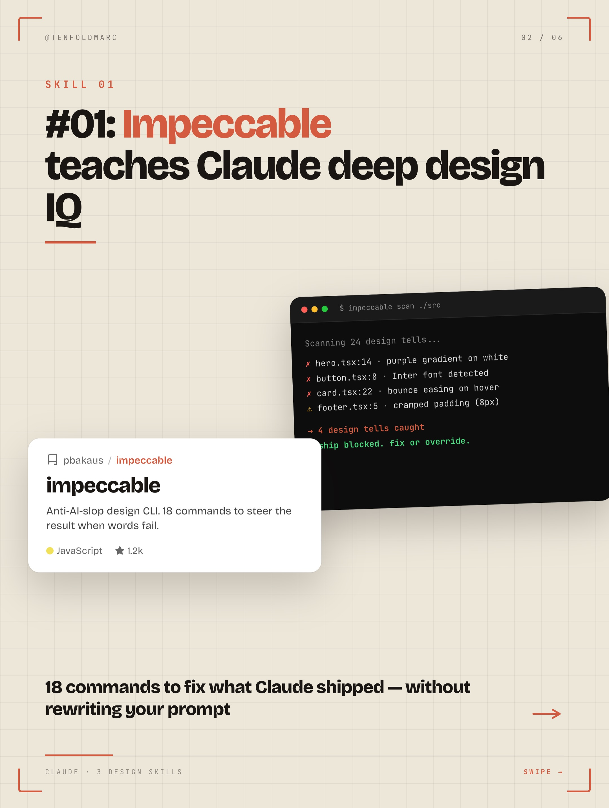
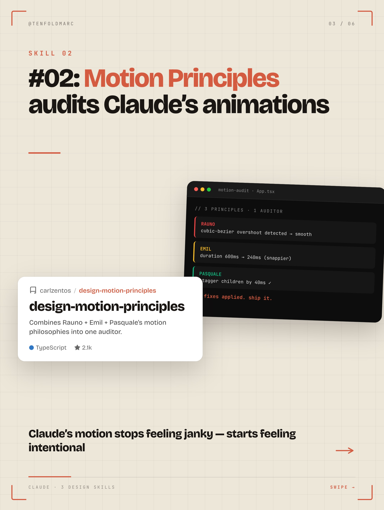
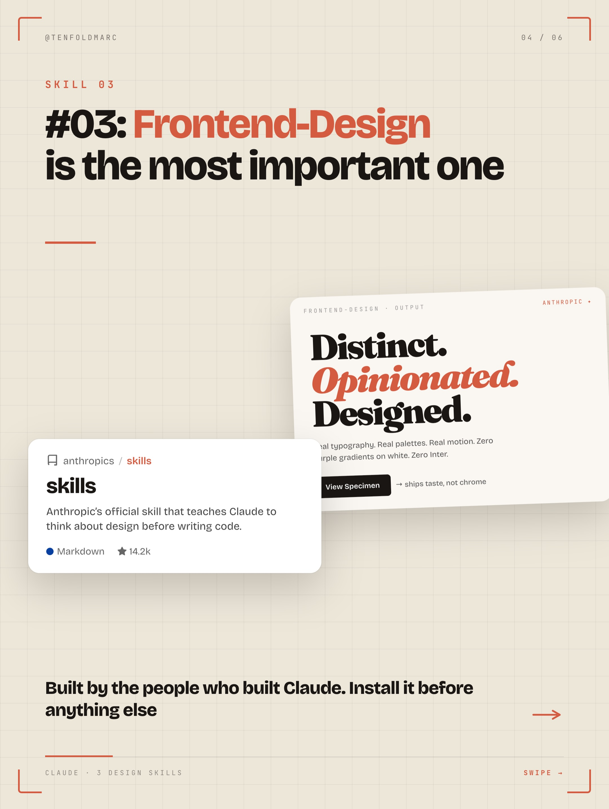
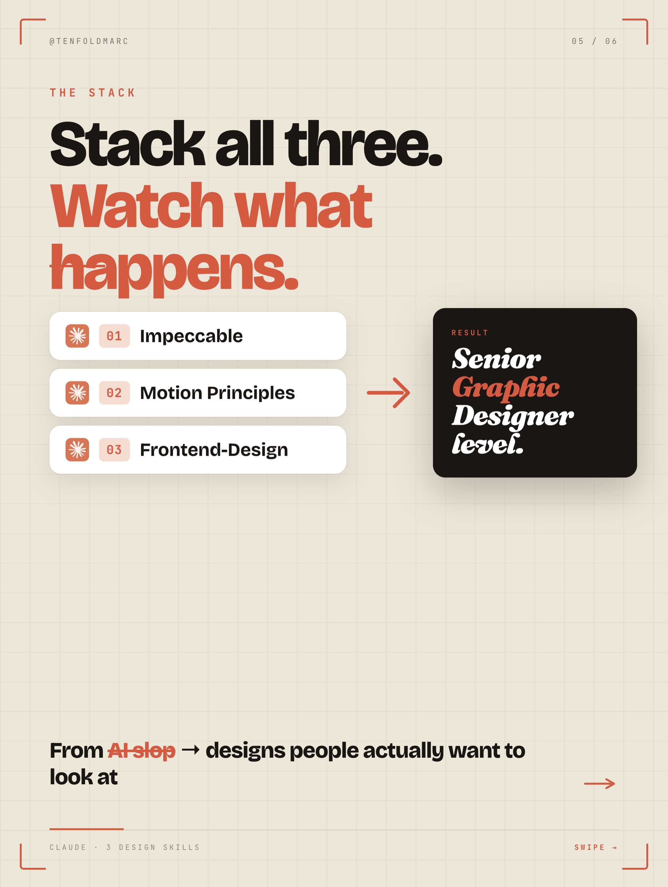

Instagram Post

From AI slop to master level with these 3 skills.
carousel (6 slides) (enriched by ClaudeClaw)
Summary
Claude Sucks At Design | 02 / 06 SKILL 01 #01: Impeccable teaches Claude deep desi... | 03 / 06 SKILL 02 #02: Motion Principles audits Claude's a... | 04 / 06 SKILL 03 #03: Frontend-Design is the most importa... | 05 / 06 THE STACK Stack all three | 06 / 06 WANT THE FREE GUIDE? DESIGN Comment DESIGN and I'...
Caption
From AI slop to master level with these 3 skills.
Comment "design" and I'll send you the full guide.
1
Claude Sucks At Design. 3 Skills To Fix It.
A large, orange, pixelated character resembling a Space Invader stands on a paved surface in an urban environment with tall buildings and a blue sky visible in the background, captured with a fisheye lens effect.
2
@TENFOLDMARC 02 / 06 SKILL 01 #01: Impeccable teaches Claude deep design IQ $ impeccable scan ./src Scanning 24 design tells... x hero.tsx:14 - purple gradient on white x button.tsx:8 - Inter font detected x card.tsx:22 - bounce easing on hover x footer.tsx:5 - cramped padding (8px) - 4 design tells caught ship blocked. fix or override. pbakaus / impeccable impeccable Anti-Al-slop design CLI. 18 commands to steer the result when words fail. JavaScript 1.2k 18 commands to fix what Claude shipped - without rewriting your prompt CLAUDE - 2 DESIGN SKILLS SWIPE →
The image displays a presentation slide with a grid background, featuring a large title about "Impeccable" teaching "Claude deep design IQ", a terminal window showing code errors, and a white card describing "impeccable" software.
3
@TENFOLDMARC 03 / 06 SKILL 02 #02: Motion Principles audits Claude's animations motion-audit - App.tsx // 3 PRINCIPLES + 1 AUDITOR RAUNO cubic bezier overshoot detected - Smooth EMIL duration 600ms -> 240ms (snappier) PASQUALE stagger children by 40ms ✓ fixes applied, ship it. carlzentos / design-motion-principles design-motion-principles Combines Rauno + Emil + Pasquale's motion philosophies into one auditor. TypeScript 2.1k Claude's motion stops feeling janky - starts feeling intentional CLAUDE + 3 DESIGN SKILLS SWIPE →
A digital slide with a light grid background presents a title about "Motion Principles" auditing "Claude's animations," overlaid with a dark code editor window displaying audit details and a white card describing "design-motion-principles."
4
@TENFOLDMARC 04 / 06 SKILL 03 #03: Frontend-Design is the most important one FRONTEND-DESIGN OUTPUT ANTHROPIC + Distinct. Opinionated. Designed. al typography. Real poietics
5
@TENFOLDMARC 05 / 06 THE STACK Stack all three. Watch what happens. 01 Impeccable 02 Motion Principles 03 Frontend-Design RESULT Senior Graphic Designer level. From At-slop -> designs people actually want to look at CLAUDE 3 DESIGN SKILLS SWIPE ->
A digital slide with a grid background presents a concept about combining three design skills (Impeccable, Motion Principles, Frontend-Design) to achieve a "Senior Graphic Designer level," with navigation arrows and dots suggesting a carousel format.
6
@TENFOLDMARC 06 / 06 WANT THE FREE GUIDE? DESIGN Comment DESIGN and I'll DM you a free guide on how to use all 3 skills. CLAUDE - 3 DESIGN SKILLS END →
A social media post or slide with a grid background, featuring a logo, a question about a free guide, a call to action button, and instructions to comment for the guide.
All slides


